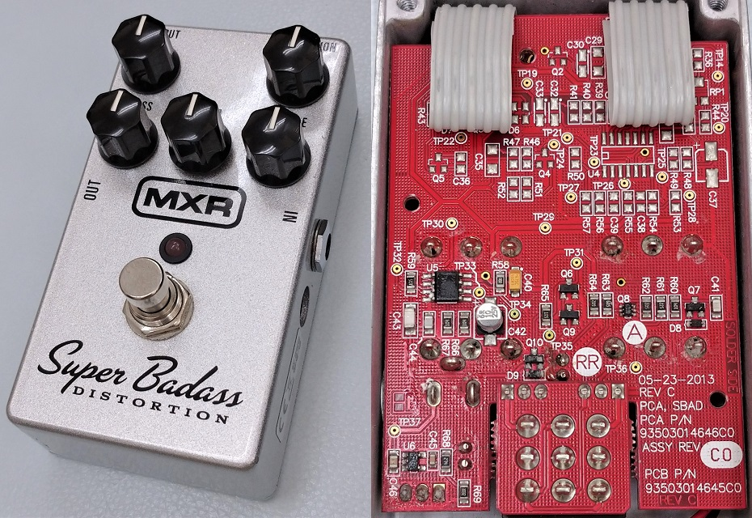
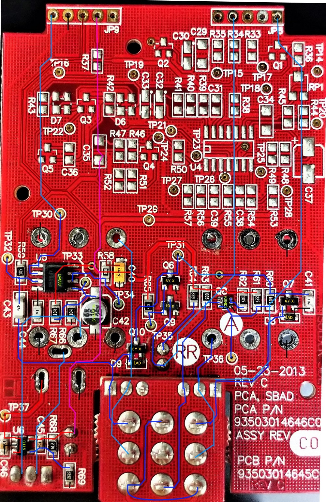
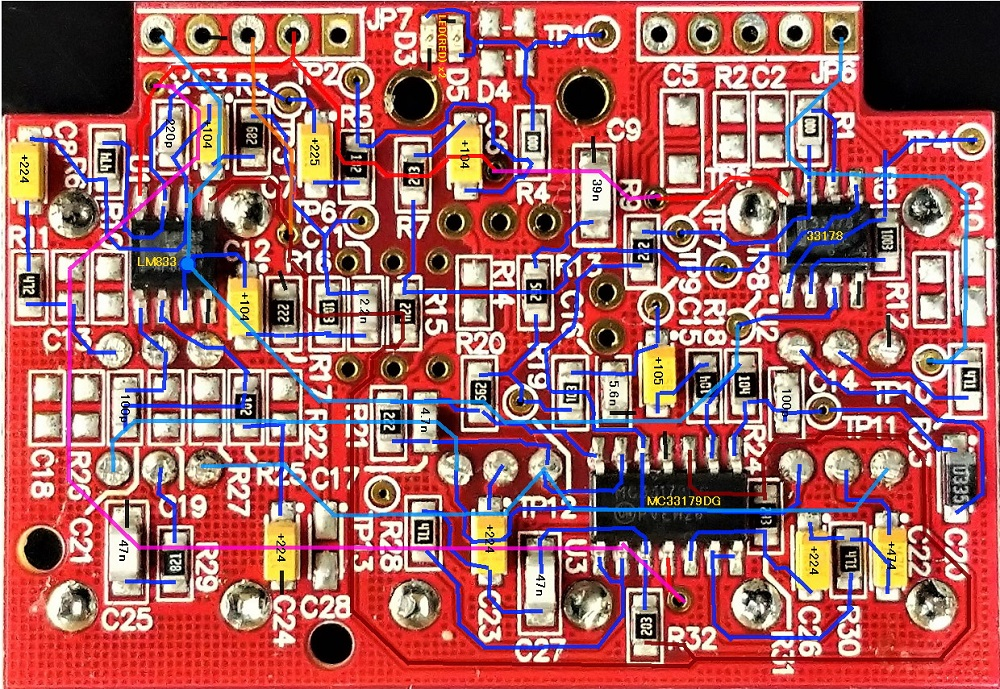
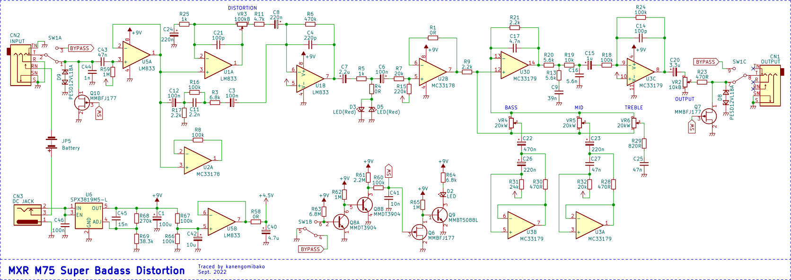
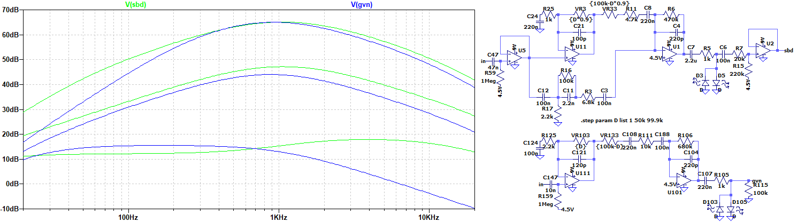
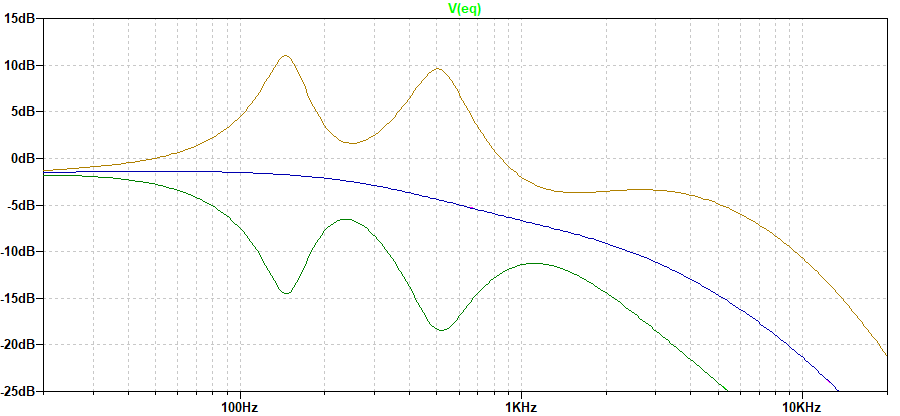

MXR M75 Super Badass Distortion 解析
2022年11月17日 カテゴリー：修理・改造・解析

MXRの歪み系エフェクターは、近年発売されたもの以外は回路が判明していると思っていました。しかしSuper Badass Distortionについてはまだ回路図が出回っていないようだったので、解析してみることにしました。KiCadとLTspiceの回路図データ、基板画像はGitHubにあります。
▽基板画像

未実装の部品が多く、その部分のトレースはしていません。開発段階ではスイッチで別の回路に切り替える仕組みがあったようですが、最終的には採用されずこのような形になったと考えられます。他の機種と共用の基板ではなさそうですし、なぜ基板が再設計されなかったのかは謎です。
※オペアンプやスイッチは取り外していないので、導通確認でパターンを推測している所があります。
▽回路図

開発段階でのみ使われていたと思われるオペアンプが一つ無駄になっています（U2A）。電源部にはレギュレータがあるため、高い電圧を入力しても9Vに安定化されます（レギュレータの絶対最大定格電圧は20V）。細かい所では、フォンジャックがダンロップのDマークがついている特殊なものとなっており、リング部分のスイッチ機構が通常と異なっています。
スイッチ関連部分には相当な数の部品が使ってあります。フットスイッチは3PDTですが単純なトゥルーバイパスにはなっておらず、FETスイッチで入出力をグラウンドに落としてあります。なぜここまでする必要があったのか、これも開発段階の回路に関係しているのかもしれません。
▽シミュレーション
- 前半の増幅部

回路構成が似ているMarshall The Guv'norとの比較です（最大ゲインを同程度に調整）。ゲインが真ん中あたりの時の周波数特性が特に似ています。ゲインが低い時にGuv'norでは高音域が下がるのに対し、Super Badass DistortionではC12側の経路が効いているため、高音域が下がらないようになっています。
- 後半のトーンコントロール部

グラフィックイコライザでよく使われる、ジャイレータ（シミュレーテッドインダクタ）を使ったイコライザ回路です。ただし、フラットにした状態（青線）では高音域が下がる形となっています。周波数は、BASSは150Hz、MIDは500Hz、TREBLEは6kHzあたりです。Guv'norのトーンコントロール（参考ページ：Marshall The Guvnor Analysis）より扱いやすくなっているように思います。